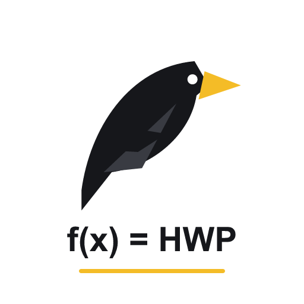

AI 대화의 수식을 편집 가능한 한글 HWPX 문서로 저장하거나 PDF로 출력합니다.
PDF는 확장 앱만 설치하면 바로 사용합니다. HWPX에는 Windows 데스크톱 한글과 도우미가 필요합니다. 확장 앱은 현재 웹스토어 테스터에게 공개되어 있습니다.
다운로드한 설치 파일을 실행하고 설치를 누르세요. 확장 앱의 설치 안내 화면으로 돌아오면 연결을 확인합니다. 확장과 도우미를 같은 버전으로 사용하세요.
Crow Science Lab. · Crow Ink